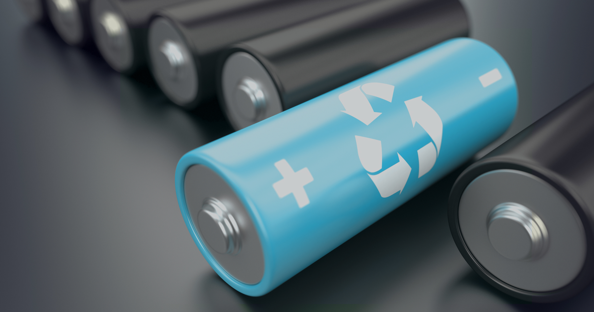
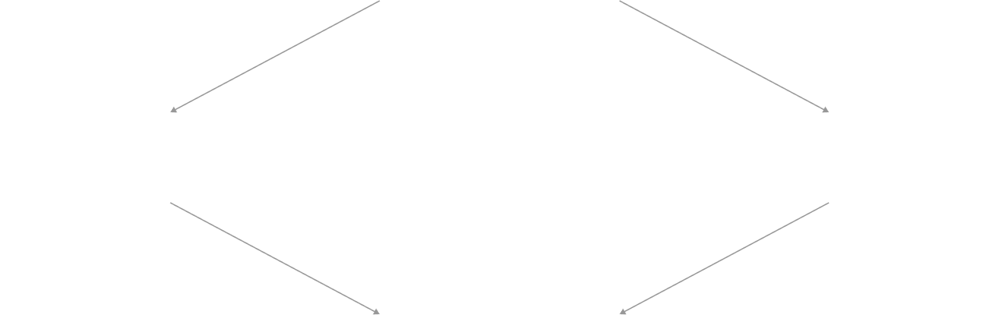
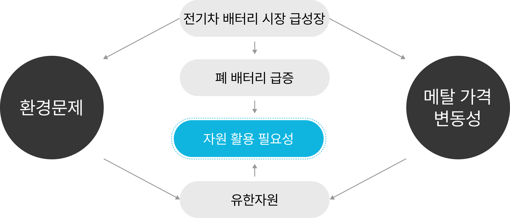
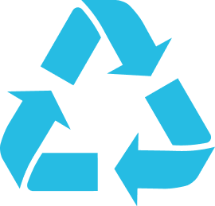

리사이클
폐기물을 자원으로,
자원선순환을 통해 새로운 가치를 창출합니다

현황
환경문제
전기차 배터리 시장 급성장
폐 배터리 급증
자원 활용 필요성
유한자원
메탈 가격
변동성


배터리 순환경제
배터리 재사용
용도변경
(Repurposing)
(Repurposing)
ESS
배터리 재활용
폐배터리
유가금속
리사이클
리사이클
양극재
배터리
배터리 리사이클링 사업은 수명이 다한 배터리를 분해하여
원재료인 리튬, 니켈, 코발트 등의 금속자원을 추출하는
지원선순환 사업입니다.
한국전구체 주식회사는 건식 및 습식 공정을 결합한 리튬 선추출 공정과 고도화 된
리사리클 · 정제 기술을 기반으로 고품질의 높은 금속 회수율을 자랑하고 있습니다.
또한 추출된 금속자원은 배터리용 양극재 전구체 공정의 원재료로 사용됩니다.
리사이클 사업의 파급효과
환경 보호 효과
채취된 자원 재활용으로
온실가스 약 90% 감소
온실가스 약 90% 감소

자원 활용도 상승
도심에 버려진 자원활용으로
제조 비용 절감
제조 비용 절감
지속가능성과
경제적 이익 창출의 동반 실현
경제적 이익 창출의 동반 실현
자원선순환을 통해 지속가능성을 확보할 수 있으며 경제적 이익 및 고용 창출에 기여합니다.
배터리 제조비용 절감 및
공급망의 안정성 상승
공급망의 안정성 상승
배터리 제조 원가 비용을 절감하고 배터리 자원보유국에 대한 수입의존도를 감소시킴으로써 배터리 공급망 선순환에 기여 합니다.
이산화탄소 배출량 감축
금속 자원을 회수하여 재활용함으로써 금속 자원 채굴 및 정제 과정에서 발생되는 이산화탄소와 온실가스 배출을 감소시켜 환경 오염 감소에 기여합니다.